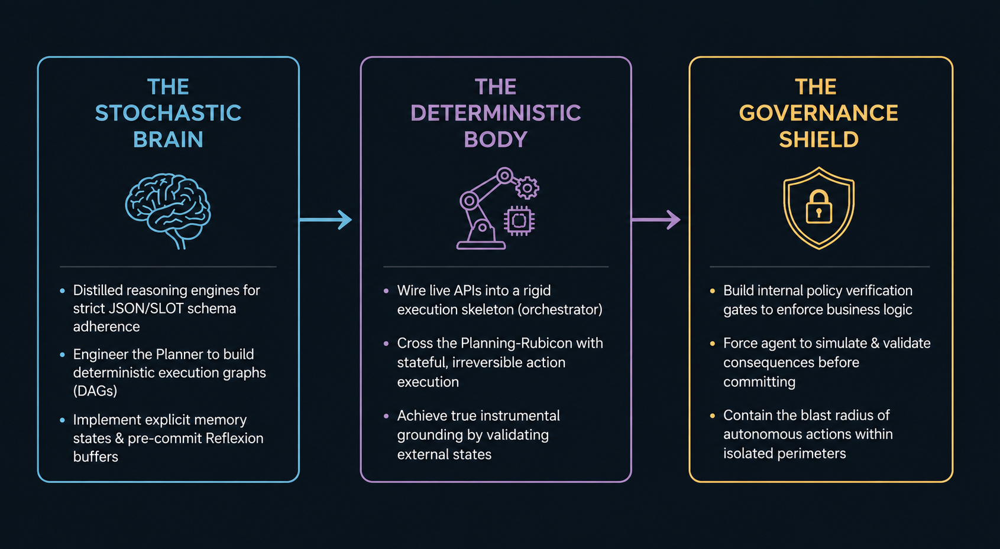

A 2-week build of a working prototype — not a production system. We validate core assumptions, demonstrate pattern feasibility, and produce reviewable code with explicit gaps documented for production hardening.

We don't deliver slideware or fragile Jupyter notebooks. You receive a fully containerized, blueprint-aligned prototype running in an isolated staging sandbox — with explicit gaps documented for production hardening.
| Level | POC Coverage | Production Hardening |
|---|---|---|
| Unit Tests | pytest (basic) | Property-based suites (49+ tests) |
| Property-based | — | Nash IR & bounds, schema invariants |
| Benchmarks | Manual validation | M5 WAPE, biophysical alignment |
| Audit Trails | — | Cryptographic immutable ledger |
I build mission-critical agents, not chat wrappers. Describe your workflows, APIs, and state-changes — I will review your requirements and reply with a calendar link within 24 hours. POC validation includes unit economics stress-testing: we model the cost delta between stateless API calls ($0.30) and verified multi-step agency ($30+) to ensure the business case survives production scaling.